一阶逻辑（四）
封面页，跳过。本讲将搭建从语法编码到 Hintikka 集模型构造的完整链条。
整章地图 · 第 9 章在干嘛
这一章的核心目标只有一句话：
它是后续完备性定理（⊨ ⇒ ⊢）的关键引擎。完备性的证法套路是反证：假设 Γ ⊬ A，把 Γ ∪ {¬A} 系统性地扩张成 Hintikka 集，再用本章方法造一个模型 → 就得到 Γ ⊭ A 的反例 → 矛盾。
本讲流程（按顺序）
- 序列数 ⟨a₀,…,aₙ⟩：把有限自然数序列编成一个自然数。（编码工具）
- Gödel 码 #X：把语言里的项 / 公式 / 符号都编成自然数。（语法 → 算术）
- Hintikka 集：定义一种"分解封闭"的公式集合。（语法上的自洽）
- 项模型 ℍ：用项的等价类当论域，造出一个具体模型。（语法变语义）
- 引理 3.41：归纳证明这个 ℍ 满足整个 Ψ。（兑现承诺）
与第 8 章的承接 · 完备性证明在哪一步
第 8 章你已经学完了：
- 形式系统（公理 + 推理规则）+ 推导 Γ ⊢ A 的定义
- 可靠性：Γ ⊢ A ⇒ Γ ⊨ A（语法对就是语义对）
- 完备性：Γ ⊨ A ⇒ Γ ⊢ A（语义对必有语法证明）—— 只给了陈述，未证
完备性的标准证法（Henkin 风格）逻辑结构如下：
| 步骤 | 属于 |
|---|---|
| ① 反设 Γ ⊬ A，则 Γ ∪ {¬A} 一致 | 第 8 章（下一讲会讲） |
| ② 把一致集扩张成 Hintikka 集 Ψ | 下一讲 |
| ③ Hintikka 集必有模型（本章核心） | 第 9 章 |
| ④ ⇒ Γ ∪ {¬A} 可满足 ⇒ Γ ⊭ A，与前提矛盾 | 合成 |
所以第 9 章只负责其中的 ③ —— "Hintikka 集 → 模型"这一段。其它环节下一讲补。
为什么要序列数和 Gödel 码
本章看似从一个奇怪的地方（素数乘积）开始，要先理解动机：
- 一个项可能像
f(g(x, h(y)), c)这样层层嵌套，结构是一棵树。 - 我们要把整个树编成一个自然数，而且能机械地还原回原树。
Gödel 的天才一招：用素数指数携带信息。
由算数基本定理（每个 N>1 唯一分解为素数乘积），这个数和这个序列是一一对应的。
定义 3.26 · 序列数
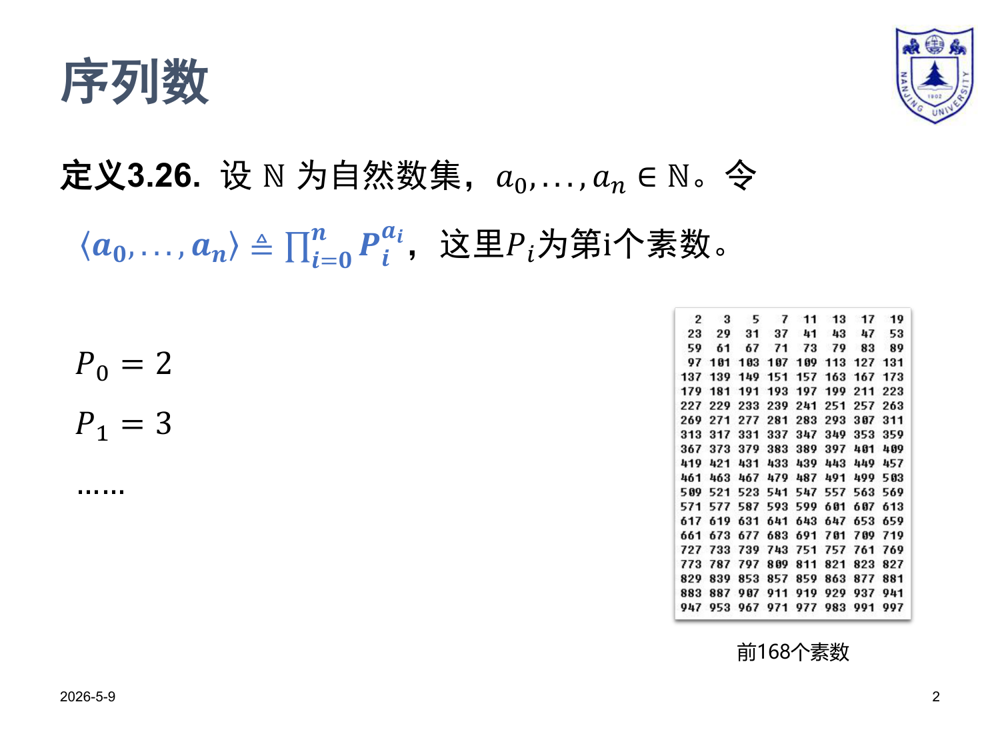
定义
白话翻译
把一串自然数 (a₀, a₁, …, aₙ) 装进"素数指数"里。一个序列对应一个具体的乘积数。
具体例子
- ⟨3⟩ = 2³ = 8
- ⟨3, 1⟩ = 2³ · 3¹ = 24
- ⟨3, 1, 0, 2⟩ = 2³ · 3¹ · 5⁰ · 7² = 8 · 3 · 1 · 49 = 1176
- ⟨0, 0⟩ = 2⁰ · 3⁰ = 1
算数基本定理（铺垫）
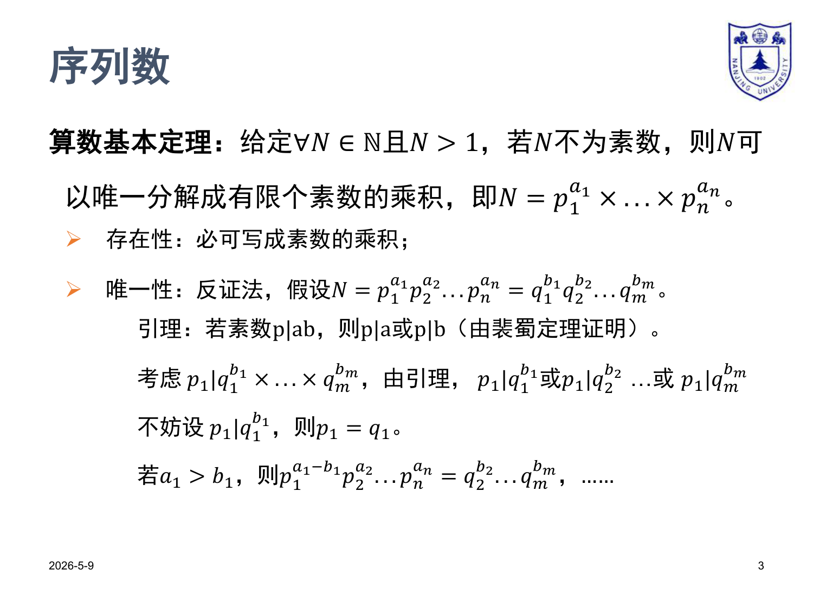
定理
给定 ∀N ∈ ℕ 且 N > 1，N 可以唯一分解为有限个素数的乘积：N = p₁a₁ × … × pₙaₙ。
白话
"每个大于 1 的自然数都有独一无二的素因子分解。" 这是序列数能成立的全部基础——只有唯一性才让"从数还原序列"是良定义的。
证明 · 存在性
对 N 做强归纳。若 N 是素数，结束。若 N 不是素数，则 N = a · b，其中 1 < a, b < N。由归纳假设 a, b 都能写成素数乘积 → N 也能。
证明 · 唯一性
反证法。假设 N 有两种分解：
关键引理：若素数 p | ab，则 p | a 或 p | b
由裴蜀定理（Bézout）证。若 p ∤ a，则 gcd(p, a) = 1（因为 p 是素数，因子只有 1 和 p），由裴蜀有整数 x, y 使 px + ay = 1。两边同乘 b：pbx + aby = b。因为 p | ab，所以 p | aby；又 p | pbx；所以 p | b。✓
主体推导
看 p₁ | N = q₁b₁ q₂b₂ … qmbm。反复用引理（p₁ | XY ⇒ p₁ | X 或 p₁ | Y）：
p₁ | q₁^b₁ · (q₂^b₂ … q_m^b_m) ⇒ p₁ | q₁^b₁ 或 p₁ | q₂^b₂ … q_m^b_m ← 引理 继续展开右支 ⇒ 最终 ∃ k, p₁ | q_k^b_k 因为 p₁ 是素数, 反复用引理 ⇒ p₁ | q_k ← 引理（p | q_k · q_k^(b_k-1)） q_k 也是素数, 只有因子 1 和 q_k ⇒ p₁ = q_k ← 素数的定义
重新排序 q 使 p₁ = q₁。比较 p₁ 的次数：
若 a₁ > b₁: 两边除以 p₁^b₁ p₁^(a₁-b₁) · p₂^a₂ … p_n^a_n = q₂^b₂ … q_m^b_m ← 消去 左边仍含因子 p₁ (因 a₁-b₁ ≥ 1) 但右边的 q₂,…,q_m 都 ≠ p₁ (前面已让 q₁=p₁ 排到第一) ⇒ 右边 p₁ 的次数 = 0, 矛盾。
若 a₁ < b₁，对称矛盾。所以 a₁ = b₁。两边消去 p₁a₁，对剩下的项归纳重复，最终得 n = m 且各对 (pᵢ, aᵢ) 与 (qᵢ, bᵢ) 一一对应。∎
命题 3.27 · 序列数唯一性
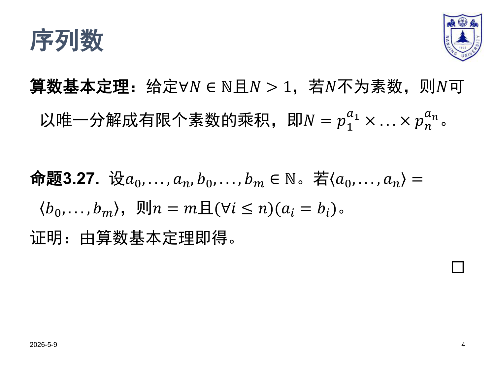
命题
若 ⟨a₀, …, aₙ⟩ = ⟨b₀, …, bm⟩，则 n = m 且对所有 i ≤ n，aᵢ = bᵢ。
白话
序列数是序列的"指纹"——指纹相同必是同一序列。
证明
左边 = ∏ Pᵢaᵢ，右边 = ∏ Pⱼbⱼ。两边是同一个自然数的两种素因子分解。由算数基本定理的唯一性，每个素数（即每个 Pᵢ）在两边的指数必相等。∎
ep 例（累积）
这是 p6 的不完整累积版（只写到 "例，设 x=2²·3·11,"，还没列具体值）。直接跳到 p6 看完整版。
定义 3.28 · ep 函数（解码）
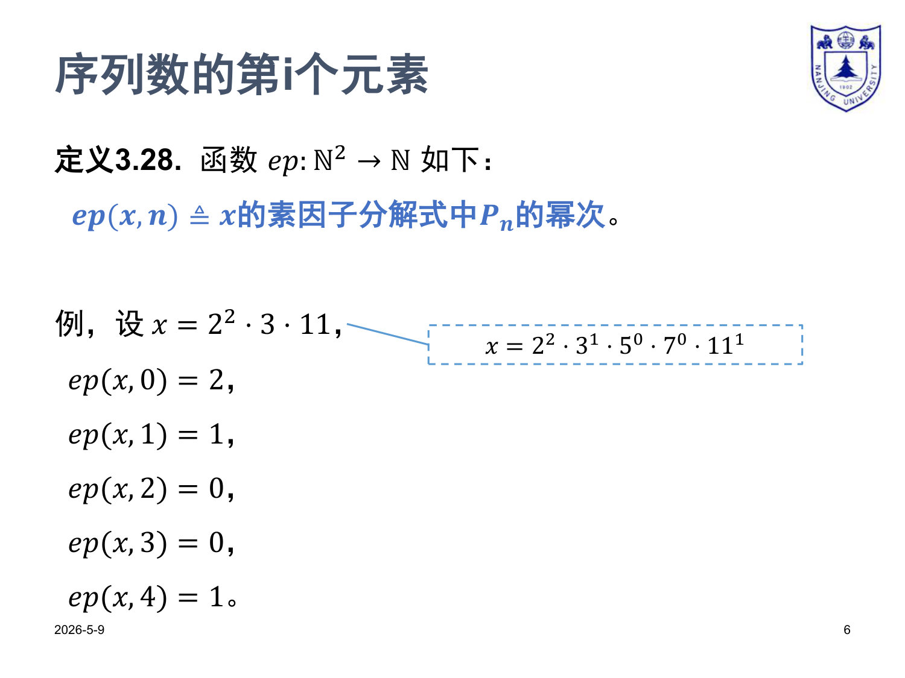
定义
白话
给一个数 x 和一个下标 n，告诉你"第 n 个素数 Pn 在 x 里的指数是多少"。
具体例子（x = 2² · 3 · 11）
先把 x 补全成"完整素数排列"：
| n | Pn | ep(x, n) | 解读 |
|---|---|---|---|
| 0 | 2 | 2 | 2 的指数 |
| 1 | 3 | 1 | 3 的指数 |
| 2 | 5 | 0 | 没出现 → 0 |
| 3 | 7 | 0 | 没出现 → 0 |
| 4 | 11 | 1 | 11 的指数 |
简写 + 命题 3.29 · 机械解码
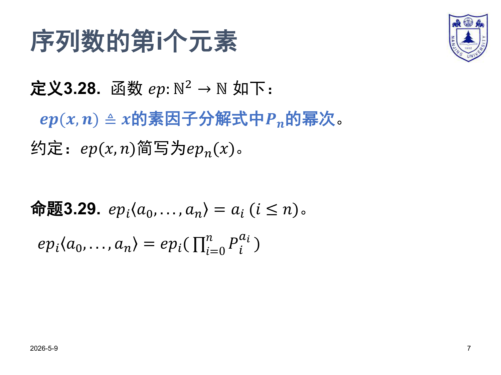
约定
ep(x, n) 简写为 epn(x)。下标移到了 ep 上，看着像"取第 n 个元素"。
命题 3.29
证明（一行）
epi⟨a₀, …, aₙ⟩ = epi( ∏j=0n Pⱼaⱼ ) = "这个数中 Pi 的指数" = aᵢ。∎
编码 / 解码 小结
| 操作 | 符号 | 作用 | 方向 |
|---|---|---|---|
| 编码 | ⟨a₀, …, aₙ⟩ ≜ ∏ Pᵢaᵢ | 序列 → 自然数 | 有限序列 ⟶ 一个数 |
| 解码 | epi(x) = x 中 Pᵢ 的指数 | 自然数 → 第 i 个元素 | 一个数 ⟶ 任意位置 |
这两个操作满足：epi⟨a₀, …, aₙ⟩ = aᵢ（命题 3.29）。
有了这套底座，下一节我们就把它叠到一阶语言的每一个符号、项、公式上。
定义 3.30 · 一阶语言的符号集
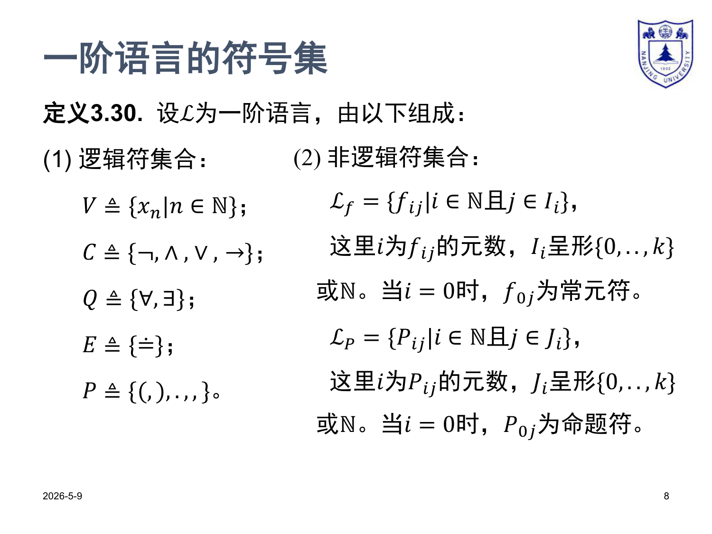
回炉：一阶语言由哪些符号构成
(1) 逻辑符（语言无关）
- V = {xn | n ∈ ℕ}：变元集，无穷可数
- C = {¬, ∧, ∨, →}：连接词
- Q = {∀, ∃}：量词
- E = {≐}：等号（注意是
≐，不是 ≃ 也不是 =） - P = { (, ), ., , }：标点（左括号、右括号、点、逗号）
(2) 非逻辑符（语言相关）
- ℒf = { fij | i ∈ ℕ, j ∈ Ii }：函数符。i 是元数，j 是序号。当 i = 0 时 f0j 是常元符。
- ℒP = { Pij | i ∈ ℕ, j ∈ Ji }：谓词符。当 i = 0 时 P0j 是命题符（0 元谓词）。
具体例子
算术语言 𝒜 里的常元 0、1，函数符 +、×，谓词符 < ——在这套形式里写成：
| 𝒜 中习惯写法 | 形式 (i, j) |
|---|---|
| 0 | f0,0 |
| 1 | f0,1 |
| + | f2,0 |
| × | f2,1 |
| < | P2,0 |
· ≐（U+2250）：一阶语言里的"等词"（语法符号）
· ≃：逻辑等价（如 A ≃ B，第 7 章引入）
· =：元语言里的等于（如 #X = ⟨…⟩）
定义 3.31 · Gödel 码（逻辑符部分）
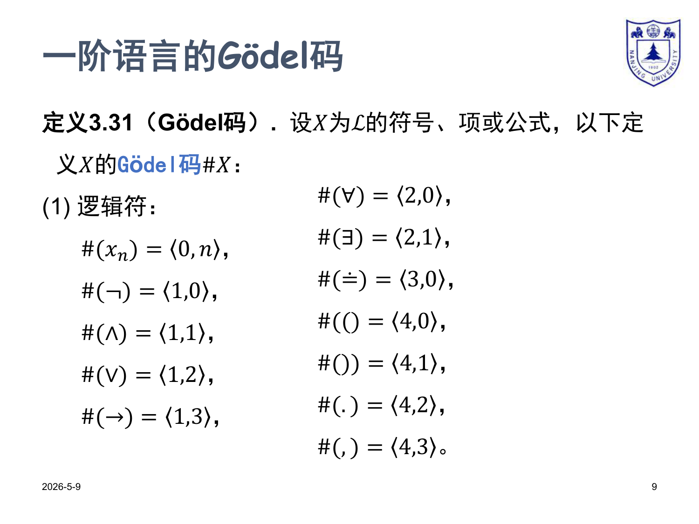
记 #X 为 X 的 Gödel 码（X 可以是符号 / 项 / 公式）。逻辑符每个都赋一个序列数：
| 符号 | # | 解读（首位 = 类型标签） |
|---|---|---|
| xn | ⟨0, n⟩ | 0 = 变元 |
| ¬ | ⟨1, 0⟩ | 1 = 连接词 |
| ∧ | ⟨1, 1⟩ | |
| ∨ | ⟨1, 2⟩ | |
| → | ⟨1, 3⟩ | |
| ∀ | ⟨2, 0⟩ | 2 = 量词 |
| ∃ | ⟨2, 1⟩ | |
| ≐ | ⟨3, 0⟩ | 3 = 等号 |
| ( | ⟨4, 0⟩ | 4 = 标点 |
| ) | ⟨4, 1⟩ | |
| . | ⟨4, 2⟩ | |
| , | ⟨4, 3⟩ |
Gödel 码（非逻辑符 + 项）
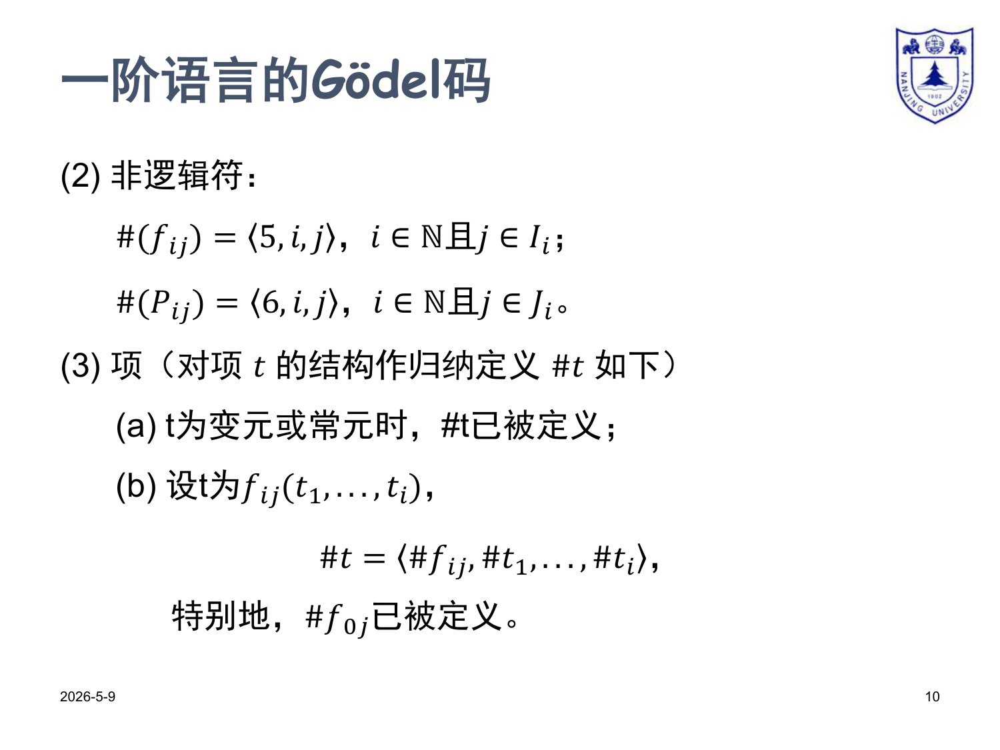
(2) 非逻辑符
- #(fij) = ⟨5, i, j⟩ ← 5 = 函数符
- #(Pij) = ⟨6, i, j⟩ ← 6 = 谓词符
(3) 项的 Gödel 码（对项结构归纳）
回炉第 6 章：项要么是变元 / 常元，要么是 f(t₁, …, ti) 形式。
- (a) 基础：t 为变元或常元时，#t 已被定义（前面已给）。
- (b) 归纳：t = fij(t₁, …, ti)，定义
#t = ⟨ #fij, #t₁, …, #ti ⟩特别地 f0j 是常元，#f0j 已被定义。
例
设 t = f2,0(x₀, x₁)（即 𝒜 中的 x₀ + x₁）。
#t = ⟨ #f₂,₀, #x₀, #x₁ ⟩
= ⟨ ⟨5, 2, 0⟩, ⟨0,0⟩, ⟨0,1⟩ ⟩
Gödel 码 · 首位对照速查表
把"首位 → 符号类型"的对照集中起来，方便看到一个 Gödel 码立刻判类型。
| 首位 | 类型 | 结构 | 例子 |
|---|---|---|---|
| 0 | 变元 | ⟨0, n⟩ | xn |
| 1 | 连接词 | ⟨1, k⟩ 或递归 ⟨1, …, #A, #B⟩ | ¬, ∧, ∨, → |
| 2 | 量词 / 量化公式 | ⟨2, k⟩ 或 ⟨2, …, #x, #., #A⟩ | ∀, ∃ |
| 3 | 等号 / 等式 | ⟨3, 0⟩ 或 ⟨3, …, #t, #s⟩ | ≐ |
| 4 | 标点 | ⟨4, k⟩ | ( ) . , |
| 5 | 函数符 / 项 | ⟨5, i, j⟩ 或 ⟨5, …, #t₁, …⟩ | fij(…) |
| 6 | 谓词符 / 原子公式 | ⟨6, i, j⟩ 或 ⟨6, …, #t₁, …⟩ | Pij(…) |
定义 3.31 (4) · 公式的 Gödel 码
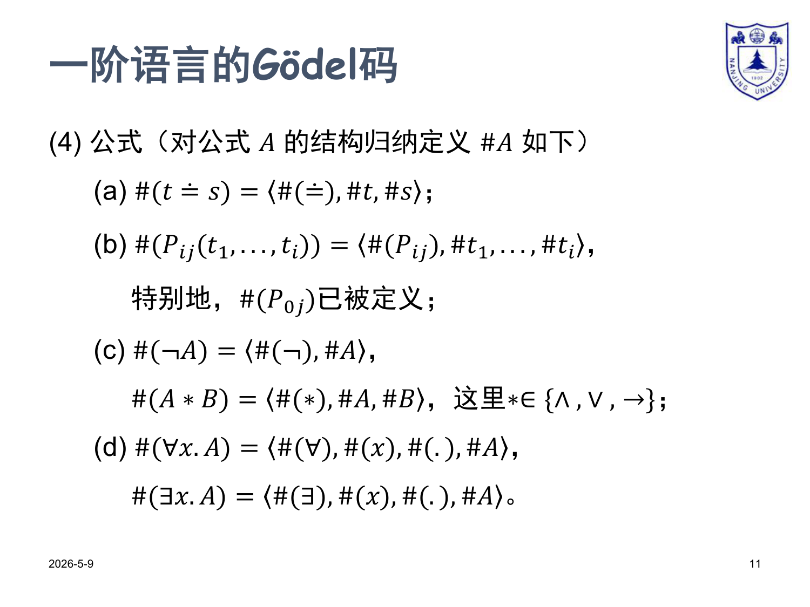
同样对公式结构归纳定义 #A：
- (a) 等式：#(t ≐ s) = ⟨ #(≐), #t, #s ⟩
- (b) 谓词公式：#(Pij(t₁, …, ti)) = ⟨ #Pij, #t₁, …, #ti ⟩。特别地命题符 #(P0j) 已被定义。
- (c) 连接词复合：
#(¬A) = ⟨ #(¬), #A ⟩
#(A * B) = ⟨ #(*), #A, #B ⟩，其中 * ∈ {∧, ∨, →} - (d) 量化公式：
#(∀x . A) = ⟨ #(∀), #x, #(.), #A ⟩
#(∃x . A) = ⟨ #(∃), #x, #(.), #A ⟩
例 · #(∀x₀ P2,6(x₀, x₁))
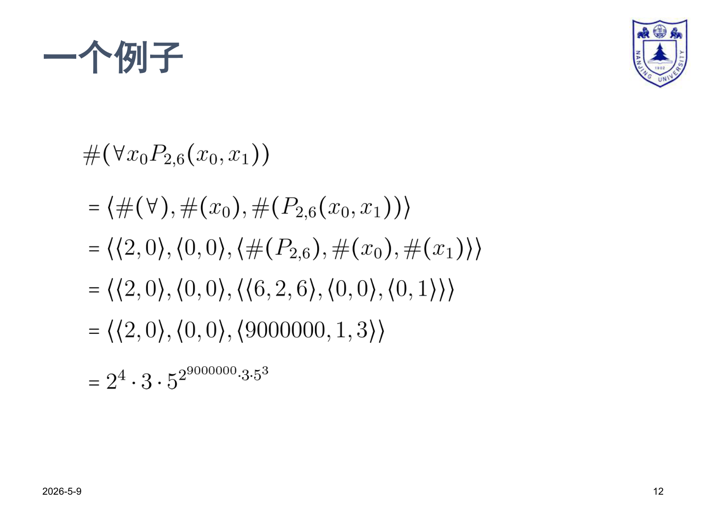
逐层展开
#(∀x₀ P₂,₆(x₀, x₁)) = ⟨ #(∀), #(x₀), #(P₂,₆(x₀, x₁)) ⟩ ← 量化公式规则 (d)，省略了 #(.) = ⟨ ⟨2,0⟩, ⟨0,0⟩, ⟨ #(P₂,₆), #(x₀), #(x₁) ⟩ ⟩ ← 谓词公式规则 (b) = ⟨ ⟨2,0⟩, ⟨0,0⟩, ⟨ ⟨6, 2, 6⟩, ⟨0,0⟩, ⟨0,1⟩ ⟩ ⟩ ← 非逻辑符 #(P_ij) = ⟨6, i, j⟩ 最里层 ⟨6,2,6⟩, ⟨0,0⟩, ⟨0,1⟩ 各自展开成具体数: ⟨6,2,6⟩ = 2⁶ · 3² · 5⁶ = 9 000 000 ⟨0,0⟩ = 2⁰ · 3⁰ = 1 ⟨0,1⟩ = 2⁰ · 3¹ = 3 所以最里层 = ⟨9000000, 1, 3⟩ = 2^9000000 · 3¹ · 5³ 最外层 = 2⁴ · 3 · 5^(2^9000000 · 3 · 5³) ← 怪兽数
定理 3.32 · 唯一对应
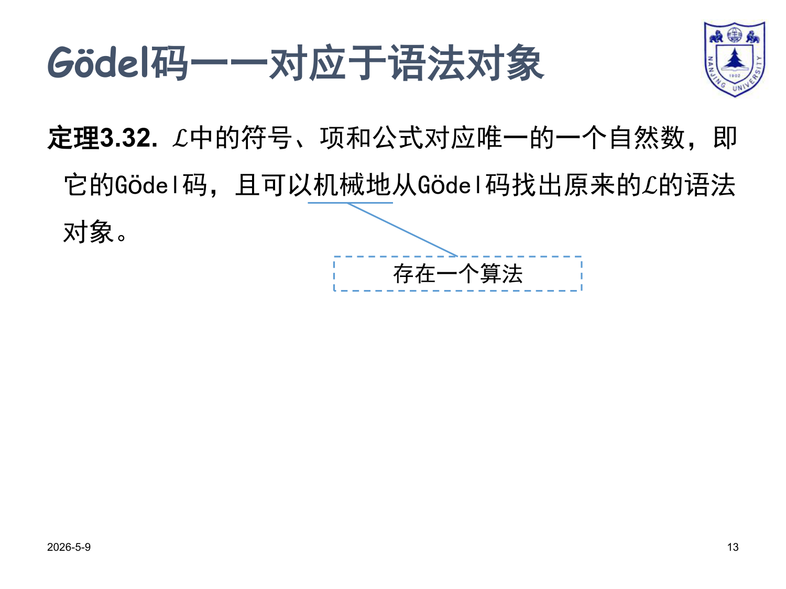
ℒ 中的符号、项和公式对应唯一的一个自然数（其 Gödel 码），且存在一个算法从 Gödel 码机械还原原 ℒ 语法对象。
白话
语法对象 ↔ 自然数 是双射，且可计算可逆。
为什么
- 唯一性：每个序列数 ⟨…⟩ 由素数指数唯一确定（命题 3.27）。整个嵌套结构是序列数套序列数，每层都唯一。
- 可计算还原：用 ep₀(·) 取首位 → 知道是哪类符号 → 用 ep₁(·), ep₂(·) … 取出子部分 → 递归。终止条件是首位 0/1/2/3/4 的原子符号。
Hintikka 集 · 动机（重要！）
接下来要登场的"Hintikka 集"是一个公式集合 Ψ，它的定义看起来非常长（17 条规则），但动机非常简单：
什么叫"分解到底"
意思是：如果一个复合公式 X 在 Ψ 里，那么它的"语义构件"也必须在 Ψ 里。例如：
- A ∧ B ∈ Ψ ⇒ A ∈ Ψ 且 B ∈ Ψ ←（分解成两个证人）
- A ∨ B ∈ Ψ ⇒ A ∈ Ψ 或 B ∈ Ψ ←（至少一个证人）
- ∀x. A ∈ Ψ ⇒ 对所有项 t，A[t/x] ∈ Ψ ←（穷举所有实例）
- ∃x. A ∈ Ψ ⇒ 存在某项 t，A[t/x] ∈ Ψ ←（至少一个见证）
再加上一致性的最弱要求："原子公式 A 和 ¬A 不能都在里面"（规则 1）。
为什么这种集合能造出模型
因为既然每个复合公式都已经被拆到原子级别，那我们只要让模型中"原子公式 ∈ Ψ"的为真、否则的为假，整个 Ψ 就自动逐级为真——这正是引理 3.41 要证的。
Hintikka 17 条 · α/β/γ/δ/ε 分类
17 条规则按 Smullyan 经典分类：
| 类 | 含义 | 规则 | 分解方式 |
|---|---|---|---|
| α | "合取式" 都成立 | 2 (¬¬), 5 (A∧B), 8 (¬(A∨B)), 4 (¬(A→B)) | 两支都必须 ∈ Ψ |
| β | "析取式" 至少一 | 3 (A→B), 6 (¬(A∧B)), 7 (A∨B) | 至少一支 ∈ Ψ |
| γ | "全称型" 对所有 t | 9 (∀x.A), 12 (¬∃x.A) | ∀t∈T, 实例 ∈ Ψ |
| δ | "存在型" 见证 t | 11 (∃x.A), 10 (¬∀x.A) | ∃t∈T, 实例 ∈ Ψ |
| ε | "等词公理" | 13 (自反), 14 (对称), 15 (传递), 16 (函数相容), 17 (谓词相容) | 等词必须按一致关系 |
| 1 | "原子一致" | 规则 1：A 与 ¬A 不能都 ∈ Ψ | 最低一致要求 |
γ 和 δ 的区别（重要！）：γ 要求所有 t 都被实例化（即 ∀x.A 的"全部见证"都要在 Ψ 里）；δ 只要求至少一个 t 见证（即 ∃x.A 的"某个证人"在 Ψ 里）。
Hintikka 集定义 1-6（累积）
17 条规则的累积幻灯。直接看 p17 完整版。
Hintikka 集定义 7-12（累积）
累积幻灯，跳过。
Hintikka 集定义 13-16（累积）
累积幻灯，跳过。
定义 3.33 · Hintikka 集（完整 17 条）
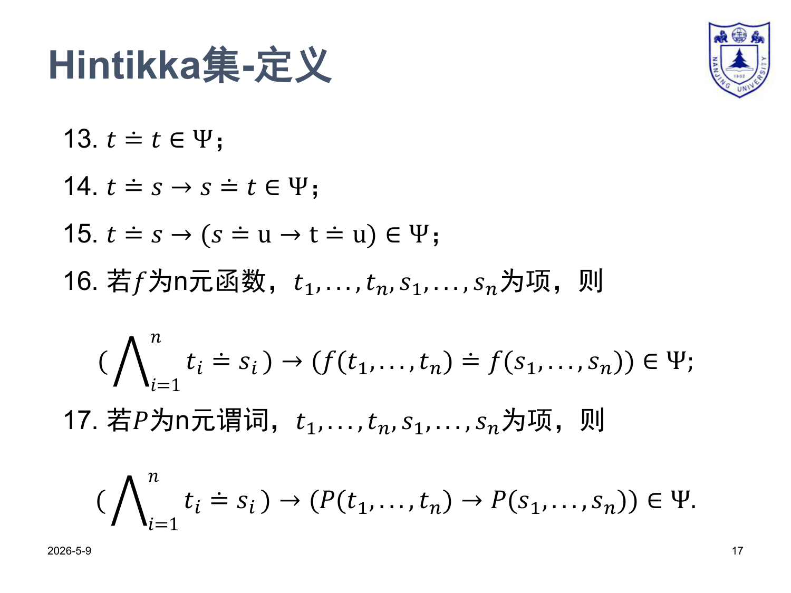
设 ℒ 为一阶语言，Ψ 为 ℒ 的公式集，令 T 为全体 ℒ 项的集合。Ψ 是 Hintikka 集 指：
① 原子一致（必须）
1. 若公式 A 为原子公式，则 A 和 ¬A 不能都 ∈ Ψ。（最弱一致性）
② α 型 · 双支都 ∈ Ψ
2. 若 ¬¬A ∈ Ψ，则 A ∈ Ψ。（双否消去）
4. 若 ¬(A → B) ∈ Ψ，则 A ∈ Ψ 且 ¬B ∈ Ψ。
5. 若 A ∧ B ∈ Ψ，则 A ∈ Ψ 且 B ∈ Ψ。
8. 若 ¬(A ∨ B) ∈ Ψ，则 ¬A ∈ Ψ 且 ¬B ∈ Ψ。
③ β 型 · 至少一支 ∈ Ψ
3. 若 A → B ∈ Ψ，则 ¬A ∈ Ψ 或 B ∈ Ψ。
6. 若 ¬(A ∧ B) ∈ Ψ，则 ¬A ∈ Ψ 或 ¬B ∈ Ψ。
7. 若 A ∨ B ∈ Ψ，则 A ∈ Ψ 或 B ∈ Ψ。
④ γ 型 · 对全体项实例化
9. 若 ∀x. A ∈ Ψ，则 ∀t ∈ T，A[t/x] ∈ Ψ。
12. 若 ¬∃x. A ∈ Ψ，则 ∀t ∈ T，¬A[t/x] ∈ Ψ。
⑤ δ 型 · 存在见证项
10. 若 ¬∀x. A ∈ Ψ，则 ∃t ∈ T，¬A[t/x] ∈ Ψ。
11. 若 ∃x. A ∈ Ψ，则 ∃t ∈ T，A[t/x] ∈ Ψ。
⑥ ε 型 · 等词公理
13. t ≐ t ∈ Ψ （自反）
14. t ≐ s → s ≐ t ∈ Ψ （对称）
15. t ≐ s → (s ≐ u → t ≐ u) ∈ Ψ （传递）
16. 若 f 为 n 元函数，(⋀ᵢ tᵢ ≐ sᵢ) → f(t₁,…,tₙ) ≐ f(s₁,…,sₙ) ∈ Ψ （函数同应于相等参数 = 相等结果）
17. 若 P 为 n 元谓词，(⋀ᵢ tᵢ ≐ sᵢ) → (P(t₁,…,tₙ) → P(s₁,…,sₙ)) ∈ Ψ （等参数下谓词同真）
· 9, 12 要求"对所有 t ∈ T"
· 10, 11 要求"存在 t ∈ T"
这是后面引理 3.41 ∀ / ∃ 两条情况的分水岭。
定理 3.34 · Hintikka 集必可满足
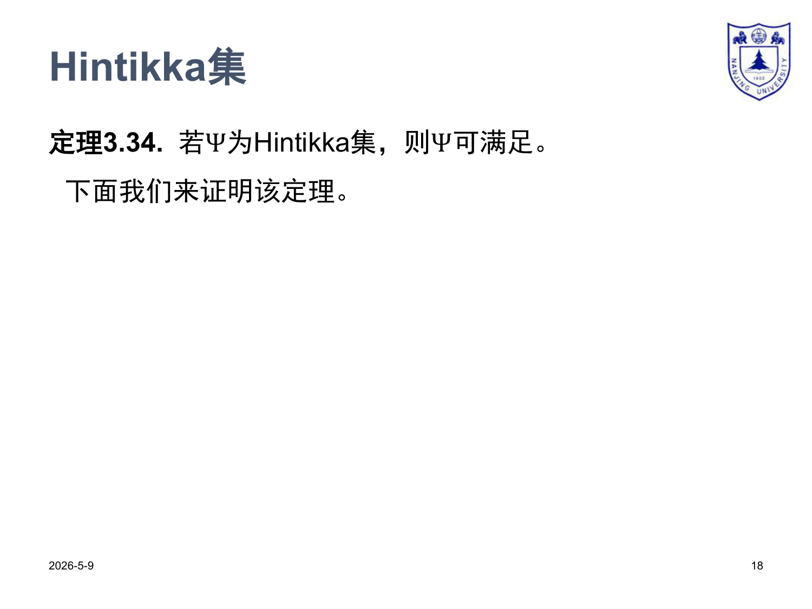
定理
若 Ψ 为 Hintikka 集，则 Ψ 可满足（即存在结构和赋值使 Ψ 中每个公式都为真）。
这条定理为什么是本章核心
"语法上看起来自洽"（Hintikka 性质）⟹ "语义上真的有模型"。这就是把语法对应到语义的关键桥梁。
证明思路（接下来 p19-p31 都在做这件事）
- p19 · 在项集 T 上定义等价关系 ~（s ~ t ⇔ s ≐ t ∈ Ψ）。
- p20-p23 · 证明 ~ 对函数 / 谓词有"良行为"（引理 3.38，congruence）。
- p25 · 用项的等价类 [t] 作为论域，定义模型 ℍ。
- p26-p31 · 对公式结构归纳，证 ℍ ⊨_σ Ψ。
定义 3.35-3.37 · 项上的等价关系
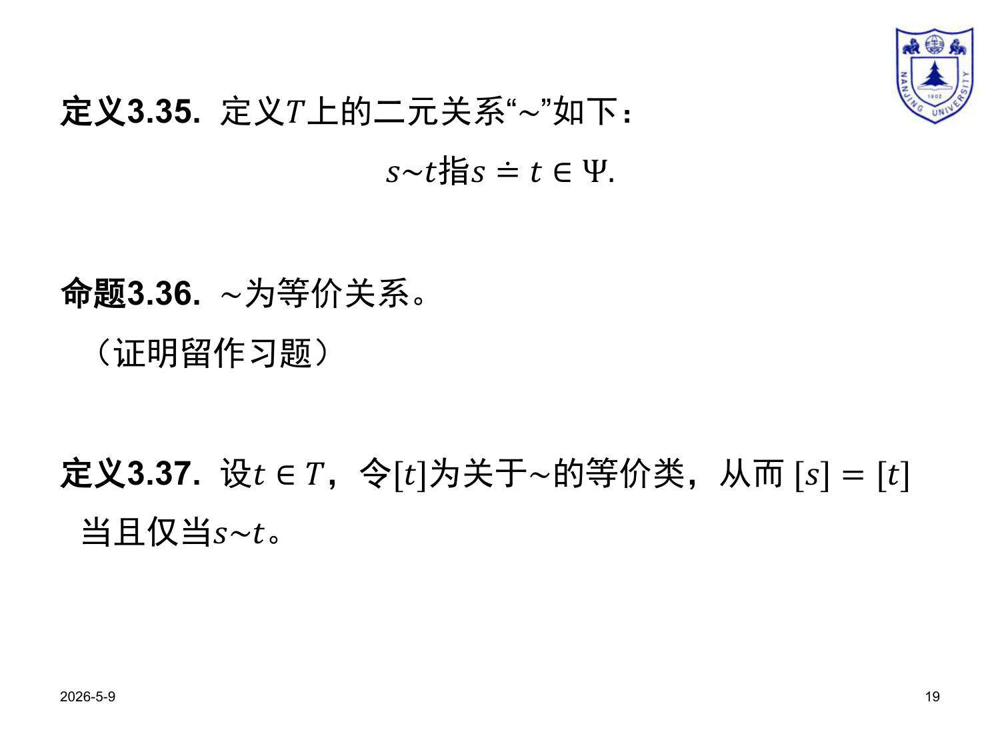
定义 3.35 · 二元关系 ~
白话：在项集 T 上定义"我们认为相等"的关系——若 Ψ 里写明 "s ≐ t"，那这两个项就被认作等价。
命题 3.36
~ 是等价关系（自反 / 对称 / 传递）。证明留作习题——但你可以一眼看到这正是 Hintikka 规则 13-15 兜住的：
- 自反：t ≐ t ∈ Ψ（规则 13）→ t ~ t ✓
- 对称：t ≐ s → s ≐ t ∈ Ψ（规则 14）→ 若 s ≐ t ∈ Ψ 则 s ≐ t → t ≐ s 用规则 3（β）展开得 t ≐ s ∈ Ψ。（需要小心规则 3 的"或"分支：若 ¬(s≐t)∈Ψ 则与前提矛盾，所以只能取右支）
- 传递：类似用规则 15。
定义 3.37 · 等价类 [t]
设 t ∈ T。令 [t] = { s ∈ T | s ~ t } 为 t 关于 ~ 的等价类。则 [s] = [t] ⇔ s ~ t。
为什么要等价类
来用算术语言 𝒜 举一个具体例子：
"2+2" 和 "4" 在 ℒ 里是两个不同的项（语法形式不一样）。
如果直接拿"项集 T 当论域"会怎样
- 论域里会同时有 "2+2" 和 "4" 两个不同对象
- 但 Ψ 要求 "2+2 ≐ 4" 为真
- 而等词 ≐ 的语义恰恰要求两边解释为同一个对象
- 矛盾 → 模型造不出来
解决
把"被 Ψ 声明相等"的项合并成一个等价类 [t]。论域用 H = {[t] | t ∈ T}。这样：
- [2+2] 和 [4] 是同一个对象（因为 2+2 ~ 4）
- 等词的语义 [s] = [t] 自动满足
引理 3.38 (累积)
引理 3.38 证明的累积版（只到第一步）。直接看 p23 完整版。
引理 3.38 (累积)
累积幻灯，跳过。
引理 3.38 (累积)
累积幻灯，跳过。
引理 3.38 · ~ 对函数 / 谓词是 congruence
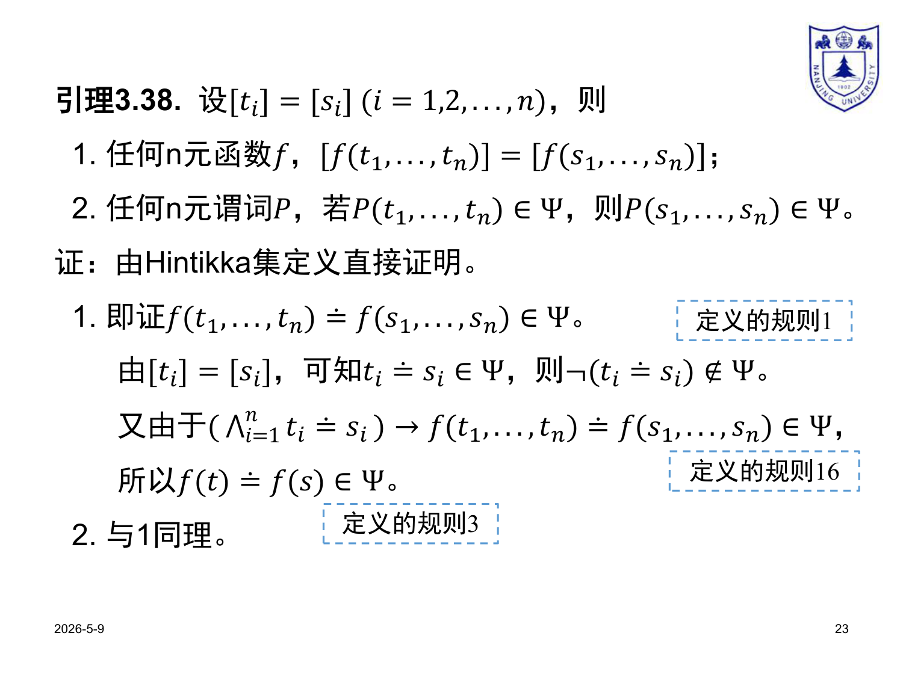
引理
设 [tᵢ] = [sᵢ]（i = 1, …, n）。则：
- 任何 n 元函数 f，[f(t₁, …, tₙ)] = [f(s₁, …, sₙ)]。
- 任何 n 元谓词 P，若 P(t₁, …, tₙ) ∈ Ψ，则 P(s₁, …, sₙ) ∈ Ψ。
白话翻译
- (1) "相等的输入给函数 → 输出也相等"。这让 fH 对等价类作用是良定义的。
- (2) "相等的输入下谓词同真同假"。这让 PH 对等价类作用是良定义的。
证明 · (1)
要证 [f(t)] = [f(s)]，即 f(t₁,…,tₙ) ≐ f(s₁,…,sₙ) ∈ Ψ。
由 [tᵢ] = [sᵢ] ⇒ tᵢ ~ sᵢ ← 等价类的定义 3.37 ⇒ tᵢ ≐ sᵢ ∈ Ψ ← ~ 的定义 3.35 ⇒ ¬(tᵢ ≐ sᵢ) ∉ Ψ ← Hintikka 规则 1（原子一致） 又 Hintikka 规则 16: (⋀ᵢ tᵢ ≐ sᵢ) → f(t₁,…,tₙ) ≐ f(s₁,…,sₙ) ∈ Ψ 把这个蕴含式记为 X → Y, 其中 X = ⋀ᵢ tᵢ ≐ sᵢ Y = f(t₁,…,tₙ) ≐ f(s₁,…,sₙ) 应用 Hintikka 规则 3 (A → B ∈ Ψ ⇒ ¬A ∈ Ψ 或 B ∈ Ψ): ¬X ∈ Ψ 或 Y ∈ Ψ 但 ¬X = ¬⋀ᵢ tᵢ ≐ sᵢ; 若它 ∈ Ψ, 用规则 6 (¬∧) 反复展开 ⇒ 某个 ¬(tᵢ ≐ sᵢ) ∈ Ψ ← 与上面 ¬(tᵢ ≐ sᵢ) ∉ Ψ 矛盾 所以必为右支: Y = f(t₁,…,tₙ) ≐ f(s₁,…,sₙ) ∈ Ψ ← (1) 得证 ∎
证明 · (2)
"与 1 同理"：用 Hintikka 规则 17（谓词相容）代替规则 16，其余推理结构相同。
由 [tᵢ] = [sᵢ] ⇒ tᵢ ≐ sᵢ ∈ Ψ ⇒ ¬(tᵢ ≐ sᵢ) ∉ Ψ ← 规则 1 Hintikka 规则 17: (⋀ᵢ tᵢ ≐ sᵢ) → (P(t₁,…,tₙ) → P(s₁,…,sₙ)) ∈ Ψ 用规则 3 拆外层蕴含 → 右支必成立: P(t₁,…,tₙ) → P(s₁,…,sₙ) ∈ Ψ 再用规则 3 拆这个蕴含 → ¬P(t₁,…,tₙ) ∈ Ψ 或 P(s₁,…,sₙ) ∈ Ψ 但前提 P(t₁,…,tₙ) ∈ Ψ ⇒ ¬P(t₁,…,tₙ) ∉ Ψ ← 规则 1 所以 P(s₁,…,sₙ) ∈ Ψ ← (2) 得证 ∎
𝕄 = (M, I) vs ℍ = (H, σ) · 对照表
第 7 章学的标准结构 𝕄 = (M, I)：M 是一个抽象论域，I 把符号解释到 M 上。
本章造的项模型 ℍ：论域就是项的等价类，解释由 Ψ 决定——一切都来自语法本身。
| 对照项 | 第 7 章 标准结构 𝕄 | 第 9 章 项模型 ℍ |
|---|---|---|
| 论域 | M（抽象集合） | H = { [t] | t ∈ T } |
| 常元 c 解释 | I(c) = 某 a ∈ M | cH = [c] |
| n 元函数 f 解释 | I(f): Mⁿ → M | fH([t₁], …, [tₙ]) = [f(t₁, …, tₙ)] |
| n 元谓词 P 解释 | I(P) ⊆ Mⁿ | PH([t₁],…,[tₙ]) 真 iff P(t₁,…,tₙ) ∈ Ψ |
| 赋值 σ | σ: V → M 任意 | σ(x) = [x]（把变元送到它自己的类） |
| 等词 | I 在 = 上是真等于 | [s] = [t] ⇔ s ~ t ⇔ s ≐ t ∈ Ψ |
要让这种构造合法，必须先保证 fH 和 PH 不依赖于代表元的选择——这就是引理 3.38 的作用。
定义 3.39 · 模型 ℍ（累积）
p25 加了引理 3.40，是 p24 的完整后继。直接看 p25。
定义 3.39 · 模型 ℍ + 引理 3.40
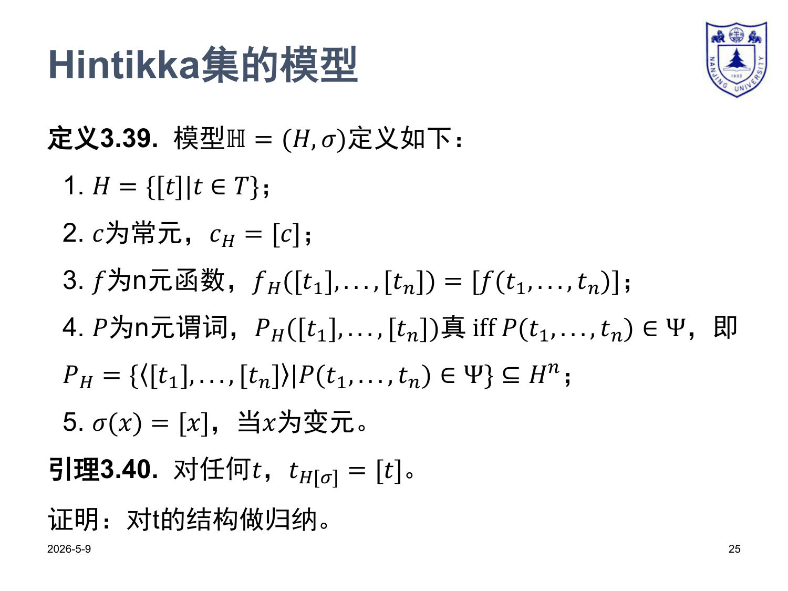
定义 3.39 · 项模型 ℍ = (H, σ)
- 论域：H = {[t] | t ∈ T}（所有项的等价类构成的集合）
- 常元解释：c 为常元 ⇒ cH = [c]
- 函数解释：f 为 n 元函数 ⇒ fH([t₁],…,[tₙ]) = [f(t₁,…,tₙ)] （合法性由引理 3.38(1) 保证）
- 谓词解释：P 为 n 元谓词 ⇒ PH([t₁],…,[tₙ]) 真 iff P(t₁,…,tₙ) ∈ Ψ；即
PH = { ⟨[t₁], …, [tₙ]⟩ | P(t₁,…,tₙ) ∈ Ψ } ⊆ Hⁿ（合法性由引理 3.38(2) 保证）
- 赋值：σ(x) = [x]（变元送到它本身的等价类）
引理 3.40
对任何项 t，tH[σ] = [t]。
白话
在项模型 ℍ 中，项的解释就是它自己的等价类——非常优雅地"语法 = 语义"。
证明（对 t 结构归纳）
基础:
· t = x 变元: x_H[σ] = σ(x) = [x] ← σ 的定义
· t = c 常元: c_H[σ] = c_H = [c] ← 常元解释
归纳: t = f(t₁,…,tₙ)
f(t₁,…,tₙ)_H[σ]
= f_H( (t₁)_H[σ], …, (tₙ)_H[σ] ) ← 项解释的归纳规则
= f_H( [t₁], …, [tₙ] ) ← 归纳假设
= [ f(t₁,…,tₙ) ] ← 定义 3.39(3) ∎
引理 3.41 证明地图
要证
ℍ ⊨_σ Ψ，即 Ψ 中每个公式在 ℍ 中赋值 σ 下都为真。
策略 · 对公式 A 的结构作归纳，同时证两条
- (a) 若 A ∈ Ψ，则 AH[σ] = T （在里面的为真）
- (b) 若 ¬A ∈ Ψ，则 AH[σ] = F （被否定在里面的为假）
归纳大纲
| 情况 | PDF 页 | 用到的核心工具 |
|---|---|---|
| A = P(t) 原子谓词 | p26 | 规则 1，PH 的定义 |
| A = s ≐ t 等词 | p27 | ~ 的定义，等价类 |
| A = ¬B 否定 | p27 | 规则 2（¬¬），归纳假设 |
| A = B ∧ C 等连接词 | p28 | 规则 5, 6 等 |
| A = ∀x. B 全称 | p29-31 | 规则 9, 10, 替换引理, 引理 3.40 |
| A = ∃x. B 存在 | p31 镜像 | 规则 11, 12, 同上 |
引理 3.41 证明 · 情况 A = p(t) 原子谓词
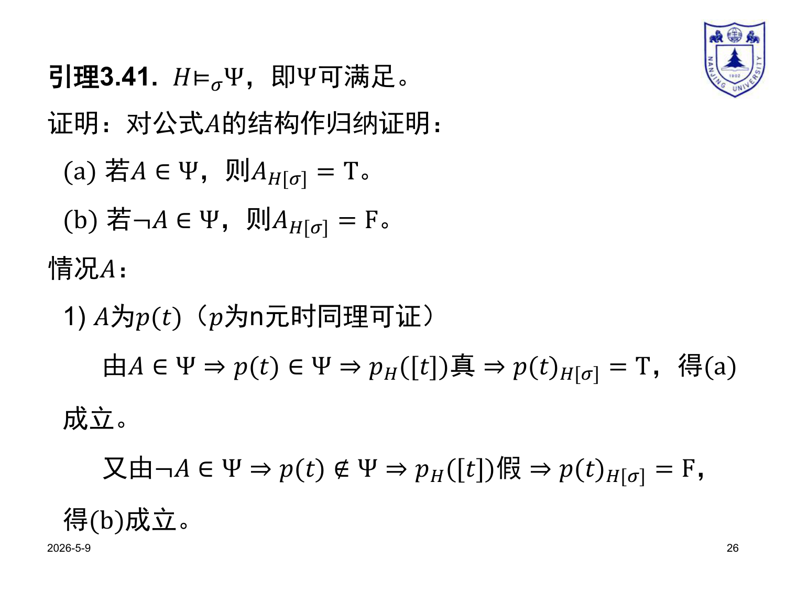
引理 3.41: ℍ ⊨_σ Ψ，即 Ψ 可满足。下面对公式 A 结构归纳证明：
- (a) 若 A ∈ Ψ，则 AH[σ] = T
- (b) 若 ¬A ∈ Ψ，则 AH[σ] = F
情况 A = p(t) （n 元同理可证）
(a) 由 A ∈ Ψ ⇒ p(t) ∈ Ψ ⇒ p_H([t]) 真 ← P_H 的定义 (定义 3.39(4)) ⇒ p(t)_H[σ] = T ← 公式语义定义 (第 7 章), 注意 [t] = t_H[σ] (引理 3.40) 得 (a) 成立。 (b) 由 ¬A ∈ Ψ ⇒ ¬p(t) ∈ Ψ ⇒ p(t) ∉ Ψ ← Hintikka 规则 1 (原子一致) ⇒ p_H([t]) 假 ← P_H 定义反向 (P_H 只收 ∈ Ψ 的) ⇒ p(t)_H[σ] = F ← 同上 得 (b) 成立。
引理 3.41 证明 · 情况 s ≐ t 和 ¬B
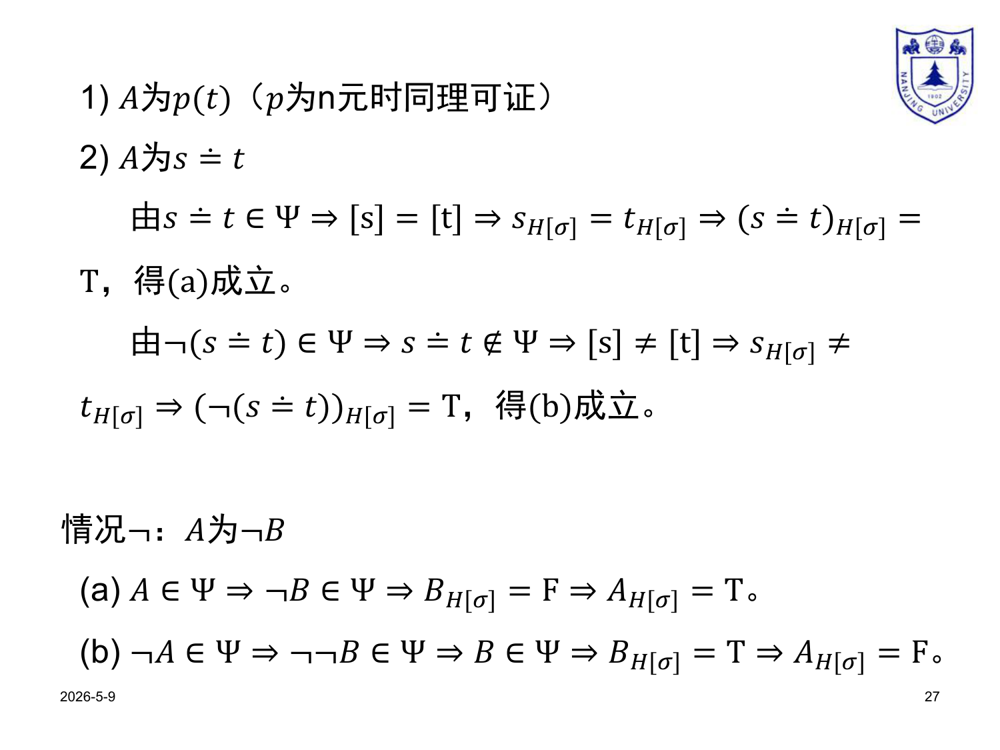
情况 A = s ≐ t（等词原子）
(a) 由 s ≐ t ∈ Ψ ⇒ s ~ t ← ~ 的定义 (定义 3.35) ⇒ [s] = [t] ← 等价类的定义 (定义 3.37) ⇒ s_H[σ] = t_H[σ] ← 引理 3.40 (t_H[σ] = [t]) ⇒ (s ≐ t)_H[σ] = T ← 等词的语义 (第 7 章) 得 (a) 成立。 (b) 由 ¬(s ≐ t) ∈ Ψ ⇒ s ≐ t ∉ Ψ ← Hintikka 规则 1 (原子一致) ⇒ [s] ≠ [t] ← ~ 和等价类定义 (反向) ⇒ s_H[σ] ≠ t_H[σ] ← 引理 3.40 ⇒ (¬(s ≐ t))_H[σ] = T ← 等词语义 + ¬ 语义 即 (s ≐ t)_H[σ] = F, 得 (b) 成立。
情况 ¬ · A = ¬B
(a) A ∈ Ψ ⇒ ¬B ∈ Ψ ⇒ B_H[σ] = F ← 对子公式 B 的归纳假设的 (b) ⇒ A_H[σ] = (¬B)_H[σ] = T ← ¬ 的语义 (b) ¬A ∈ Ψ ⇒ ¬¬B ∈ Ψ ⇒ B ∈ Ψ ← Hintikka 规则 2 (双否消去) ⇒ B_H[σ] = T ← 对子公式 B 的归纳假设的 (a) ⇒ A_H[σ] = (¬B)_H[σ] = F ← ¬ 的语义
引理 3.41 证明 · 情况 ∧ / ∨ / →
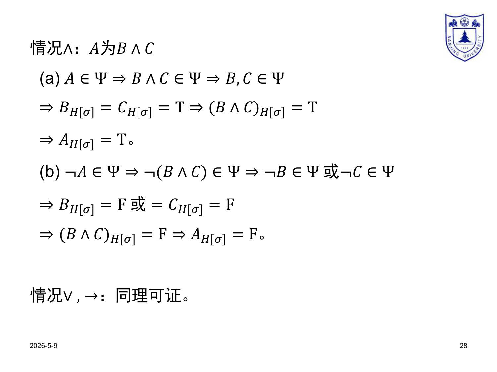
情况 ∧ · A = B ∧ C
(a) A ∈ Ψ ⇒ B ∧ C ∈ Ψ ⇒ B ∈ Ψ 且 C ∈ Ψ ← Hintikka 规则 5 (α 型) ⇒ B_H[σ] = C_H[σ] = T ← 对 B, C 的归纳假设 (a) ⇒ (B ∧ C)_H[σ] = T ← ∧ 的语义 ⇒ A_H[σ] = T。 (b) ¬A ∈ Ψ ⇒ ¬(B ∧ C) ∈ Ψ ⇒ ¬B ∈ Ψ 或 ¬C ∈ Ψ ← Hintikka 规则 6 (β 型) ⇒ B_H[σ] = F 或 C_H[σ] = F ← 对 B, C 的归纳假设 (b) ⇒ (B ∧ C)_H[σ] = F ← ∧ 的语义 ⇒ A_H[σ] = F。
情况 ∨, → · 同理可证
结构一模一样：(a) 用 α / β 规则展开 + 归纳假设；(b) 用对偶规则。
| 公式 | (a) 用规则 | (b) 用规则 |
|---|---|---|
| B ∧ C | 5 (α) | 6 (β) |
| B ∨ C | 7 (β) | 8 (α) |
| B → C | 3 (β) | 4 (α) |
引理 3.41 证明 · 情况 ∀ (a)
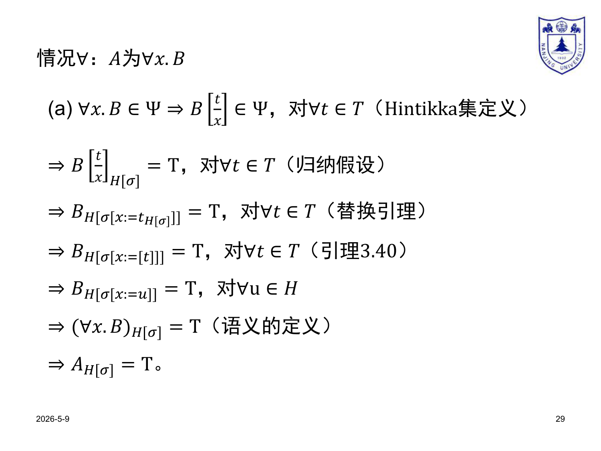
情况 ∀ · A = ∀x. B
这是整个证明里最精妙的一步——要让"语法上的对所有项 t"对接到"语义上的对所有论域元素 u"。看每一行用了哪条工具：
(a) ∀x. B ∈ Ψ
⇒ B[t/x] ∈ Ψ, 对 ∀t ∈ T ← Hintikka 规则 9 (γ)
⇒ B[t/x]_H[σ] = T, 对 ∀t ∈ T ← 对 B[t/x] 的归纳假设 (a)
⇒ B_H[σ[x := t_H[σ]]] = T, 对 ∀t ∈ T ← 替换引理 (第 7 章)
⇒ B_H[σ[x := [t]]] = T, 对 ∀t ∈ T ← 引理 3.40 (t_H[σ] = [t])
⇒ B_H[σ[x := u]] = T, 对 ∀u ∈ H ← H = {[t] | t ∈ T}, 即遍历 t 就是遍历 u
⇒ (∀x. B)_H[σ] = T ← ∀ 的语义定义 (第 7 章)
⇒ A_H[σ] = T。
每一步的关键
- ① Hintikka 规则 9：把 ∀x. B 实例化到 Ψ 中"所有项"上 — 这是"语法的全称展开"。
- ② 归纳假设：B[t/x] 是比 ∀x. B 简单的公式（结构归纳的有效性来自第 6 章），所以可以用归纳假设把"∈ Ψ"转成"真"。
- ③ 替换引理（第 7 章学过）：B[t/x]_H[σ] = B_H[σ[x := t_H[σ]]]。
白话：用项 t 替换变元 x，等价于先解释 t、再把这个语义对象赋给 x。 - ④ 引理 3.40：t_H[σ] = [t]。把"项的语义" 改写成"项的等价类"。
- ⑤ 关键观察：因为 H = {[t] | t ∈ T}，遍历所有项 t 给出的 [t] 恰好就是整个论域 H。所以"对所有 t" 等于"对所有 u ∈ H"。
- ⑥ ∀ 的语义：对所有论域元素都真 ⇒ ∀x. B 在 σ 下为真。
∀ (b) + ∃ (累积)
p30 与 p31 仅差最后一个右下角的小注释框（定理 3.34 收官）。直接看 p31。
引理 3.41 证明 · ∀ (b) + ∃ + 收官
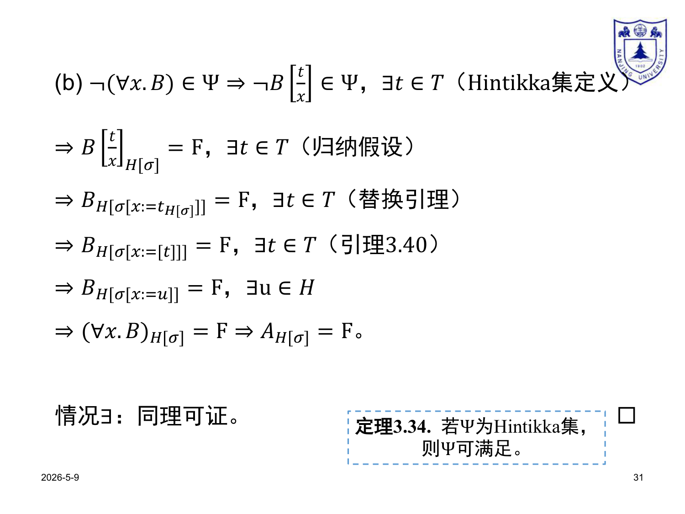
情况 ∀ 续 · (b) ¬(∀x. B) ∈ Ψ
(b) ¬(∀x. B) ∈ Ψ
⇒ ¬B[t/x] ∈ Ψ, ∃t ∈ T ← Hintikka 规则 10 (δ, 存在见证)
⇒ B[t/x]_H[σ] = F, ∃t ∈ T ← 对 B[t/x] 的归纳假设 (b)
⇒ B_H[σ[x := t_H[σ]]] = F, ∃t ∈ T ← 替换引理
⇒ B_H[σ[x := [t]]] = F, ∃t ∈ T ← 引理 3.40
⇒ B_H[σ[x := u]] = F, ∃u ∈ H ← H = {[t]}, 见证类
⇒ (∀x. B)_H[σ] = F ← ∀ 的语义 (有一个反例则全假)
⇒ A_H[σ] = F。
情况 ∃ · A = ∃x. B（PDF 说"同理可证"，这里补完整推导）
(a) ∃x. B ∈ Ψ ⇒ B[t/x] ∈ Ψ, ∃t ∈ T ← Hintikka 规则 11 (δ) ⇒ B[t/x]_H[σ] = T, ∃t ∈ T ← 归纳假设 (a) ⇒ B_H[σ[x := t_H[σ]]] = T, ∃t ∈ T ← 替换引理 ⇒ B_H[σ[x := [t]]] = T, ∃t ∈ T ← 引理 3.40 ⇒ B_H[σ[x := u]] = T, ∃u ∈ H ← 见证类 ⇒ (∃x. B)_H[σ] = T ← ∃ 的语义 (有一个见证即真) ⇒ A_H[σ] = T。 (b) ¬(∃x. B) ∈ Ψ ⇒ ¬B[t/x] ∈ Ψ, ∀t ∈ T ← Hintikka 规则 12 (γ) ⇒ B[t/x]_H[σ] = F, ∀t ∈ T ← 归纳假设 (b) ⇒ B_H[σ[x := t_H[σ]]] = F, ∀t ∈ T ← 替换引理 ⇒ B_H[σ[x := [t]]] = F, ∀t ∈ T ← 引理 3.40 ⇒ B_H[σ[x := u]] = F, ∀u ∈ H ← 遍历类 ⇒ (∃x. B)_H[σ] = F ← ∃ 的语义 (无任何见证则假) ⇒ A_H[σ] = F。
定理 3.34 收官
对公式结构归纳完成，所以 H ⊨_σ Ψ。即 Ψ 可满足。定理 3.34 证毕。∎
整章收尾 + 下一讲承接
本章得到了什么
本章具体路径：
| 步骤 | 关键定义 / 定理 |
|---|---|
| 编码工具 | 序列数 ⟨·⟩, epi, 算数基本定理, 命题 3.27, 3.29 |
| 语法 → 算术 | Gödel 码 #X, 定理 3.32（双射 + 可计算） |
| 语法自洽集 | 定义 3.33 · Hintikka 集 17 条 |
| 语义对接 | ~, 等价类 [t] (def 3.35-3.37), 引理 3.38 congruence |
| 项模型 | 定义 3.39 · ℍ = (H, σ), 引理 3.40 |
| 主定理 | 引理 3.41 · ℍ ⊨_σ Ψ ⇒ 定理 3.34 |
下一讲会做什么
- 说明"任何一致集都可以扩张成 Hintikka 集"（Lindenbaum-Henkin 式构造）。可能涉及加入新的常元（Henkin witness）使 ∃ 公式都能找到见证项。
- 把"一致集有模型"和"⊢ ⇒ ⊨ 可靠性"结合 → 完备性定理：Γ ⊨ A ⇒ Γ ⊢ A。
- 之后可能转向紧致性定理、Löwenheim-Skolem 定理等推论。
对前几章承接点
| 第 9 章用到 | 来自 |
|---|---|
| 结构归纳法（项 / 公式） | 第 6 章 · 结构唯一性定理 |
| 项替换 A[t/x] 的合法性 | 第 6 章 · 替换 + 改名 |
| 𝕄 = (M, I) 结构与赋值 σ | 第 7 章 · 语义定义 |
| 替换引理（A[t/x] 的语义 = σ[x:=t_M[σ]] 下 A 的语义） | 第 7 章 |
| 引理 3.20（Γ ⊨ A ⇔ Γ ∪ {¬A} 不可满足） | 第 7 章 · 在下一讲完备性证明中用到 |
| 可靠性 ⊢ ⇒ ⊨ | 第 8 章 · 在下一讲完备性证明中是另一半 |